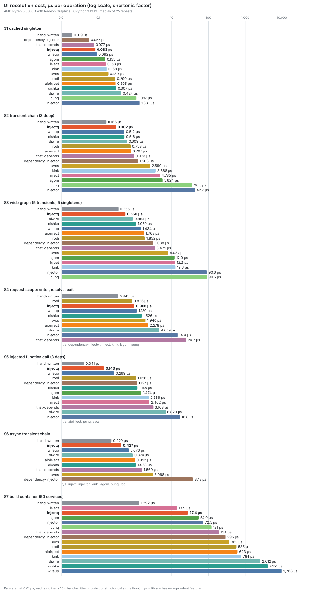

Benchmarks¶
Note
The tables, chart and machine details are generated by benchmarks/compare/report.py between
the <!-- BENCH:... --> markers. Do not edit between the markers; re-run the benchmarks
instead (see Reproduce).
What is measured, and why¶
A container costs time in a few places. Each scenario isolates one of them.
| Cost | Scenario | |
|---|---|---|
| 1 | Fetching something already built | S1 |
| 2 | Building an object graph on demand | S2, S3, S6 |
| 3 | Opening and closing a request scope | S4 |
| 4 | Injecting dependencies into a function call | S5 |
| 5 | Setting the container up | S7 |
All numbers are microseconds per operation (lower is better). Every library resolves the same objects, and is compared with a hand-written baseline: plain constructor calls with no container. The baseline is the floor; the multiplier in the full table is the cost on top of it.
A container does not make your application faster. A web request usually spends tens or hundreds of microseconds in the framework, so 1 µs per request is rarely what you feel. See the HTTP benchmark for the end-to-end view.
The scenarios¶
The classes are tiny: constructors only store their arguments, so the measurement is the container.
S1: cached singleton¶
Config is registered as a singleton. Measure container.get(Config) after it was created.
Hand-written:
S2: transient chain¶
C needs B, B needs A; all three are transient, so every resolve builds a fresh C, B
and A. Hand-written:
S3: wide graph¶
Wide takes five transient services D1..D5, and each Di takes its own singleton Si.
Every resolve builds Wide and five Ds and reuses the five singletons. Hand-written:
S4: request scope¶
Enter a request scope, resolve Req (which needs the singleton Config), leave the scope. Inside
one scope Req is the same object on repeat; a new scope gets a new one. Hand-written (a
per-request cache, the smallest thing that meets this contract):
class RequestScope:
def __enter__(self):
self.cache = {}
return self.req
def __exit__(self, *exc):
self.cache = None
def req(self):
r = self.cache.get(Req)
if r is None:
r = self.cache[Req] = Req(config)
return r
with RequestScope() as req:
req()
S5: injected function call¶
f(x1: X1, x2: X2, x3: X3) where all three are singletons. Measure calling f() with no
arguments and letting the library inject them. Hand-written:
S6: async transient chain¶
The S2 graph, resolved from an async context (await container.aget(C) or the library's
equivalent). Hand-written:
S7: build a container¶
Register 50 services in a chain (K0, K1(K0), ..., K49(K48)) in a fresh container. S7r
additionally resolves K49 once, because some libraries do their graph analysis or code
generation lazily on the first resolve, and building without resolving would hide that cost.
Hand-written:
Method¶
- Same graph, verified. Every library script resolves its graph through a shared set of checks
before timing anything (
benchmarks/common.py, classVerifier): types and nesting are right, singletons are the same object across resolves, transients are fresh, request scope gives one instance per scope and different instances across scopes, the injected function receives the right singletons. A failed check aborts the run with a non-zero exit code. A library that cannot do something (for example no request scope) is reported asn/a, not approximated. - Process isolation. Each library runs in its own Python process, so imports, monkey-patching and caches of one library cannot affect another. Classes are created fresh per library.
- Warm-up and calibration. One untimed call, then the loop count is calibrated so each repeat takes about 20 ms.
- Repeats and statistic. The loop is timed
BENCH_REPEATStimes (25 by default); the median per-operation time is reported. Medians resist the occasional slow repeat caused by other processes. - Pinned versions. Library versions are pinned in
benchmarks/compare/requirements.txtand recorded, with the CPU, OS and Python build, in the raw JSON underbenchmarks/results/. - Equivalences that are not 1:1. Where a library has no direct equivalent, the closest idiomatic form is used and listed below.
Machine and versions¶
- Date: 2026-11-23T11:11:36Z
- CPU: AMD Ryzen 5 5600G with Radeon Graphics (12 logical CPUs)
- OS: Linux-7.3.4-1-cachyos-x86_64-with-glibc2.44
- Python: CPython 3.13.13 (main Jun 2 2026 22:27:49, Clang 22.1.3 ; optimized build: True, LTO: True, GIL enabled: True)
- Libraries: aioinject 1.11.0, dependency-injector 4.49.1, dishka 1.10.1, diwire 1.5.0, inject 5.5.0, injector 0.24.0, injectq 0.6.0, kink 0.9.0, lagom 2.7.7, punq 0.9.0, rodi 2.1.0, svcs 26.2.0, that-depends 4.3.0, wireup 2.13.1
- Repeats: 25 per scenario, 0.02 s per repeat; median of repeats, microseconds per operation
Equivalence notes¶
- hand-written is plain constructor calls with module-level singletons (S4 uses a minimal dict-backed per-request cache). It is the floor: no container, no resolution.
- wireup: transients and request-scoped services can only be resolved from a scope. S2, S3 and S6 resolve from one long-lived scope; S4 enters and exits a scope per operation; S5 enters a scope per call (what
inject_from_containerdoes). - dishka has no transient lifetime:
cache=Falseis its documented equivalent. All services except the request-scoped one are registered inScope.APP. - svcs caches every service per
Container, so "transient" is a freshContainerper operation (the container construction is part of the measured cost). - that-depends: S5 uses
@inject(scope=None)(skips entering an inject scope on every call; the cheapest idiomatic form). S4 uses aContextResourceinContextScopes.REQUEST. - injector: request scope is a custom
Scope(the documented extension point), not a built-in. punq, kink and inject have no request scope (n/a). kink and inject wire classes by mutating__init__/ a global injector. - rodi: S7 includes
build_provider()(eager validation and wiring), so S7 and S7r are the same cost. aioinject:SyncContainerfor S1-S5/S7, asyncContainerfor S6. diwire: S5 passesdiwire_resolver=explicitly because creating any otherContainerclears its global fallback. - lagom autowires unregistered classes as transients; the singletons and the 50-class chain are registered explicitly.
- dependency-injector: S6 uses providers in async mode; Factory/Singleton providers are declared once, as in its docs.
- S7 measures building the container; S7r additionally resolves the 50th service (a 50-deep chain), because some libraries defer work (graph analysis, code generation) to the first resolve.
Results¶
Headline table¶
Fastest DI library per row in bold; the hand-written column is the floor, not a competitor.
| µs/op (median, lower is better) | S1 singleton | S2 transient chain | S3 wide graph | S4 request scope | S5 injected call | S6 async chain |
|---|---|---|---|---|---|---|
| injectq | 0.083 | 0.302 | 0.550 | 0.968 | 0.143 | 0.427 |
| aioinject [1] | 0.295 | 0.787 | 1.768 | 2.278 | n/a | 0.992 |
| dependency-injector [2] | 0.057 | 1.203 | 3.038 | n/a | 1.127 | 37.8 |
| dishka [3] | 0.307 | 0.516 | 1.069 | 1.526 | 1.165 | 1.068 |
| diwire [4] | 0.424 | 0.609 | 0.884 | 4.609 | 6.820 | 0.874 |
| inject [5] | 0.158 | 4.785 | 12.2 | n/a | 2.462 | n/a |
| injector [6] | 1.331 | 42.7 | 90.6 | 14.4 | 16.8 | n/a |
| kink [7] | 0.168 | 3.688 | 12.6 | n/a | 2.366 | n/a |
| lagom [8] | 0.155 | 5.624 | 12.0 | n/a | 1.474 | n/a |
| punq [9] | 1.097 | 36.5 | 90.6 | n/a | n/a | n/a |
| rodi [10] | 0.290 | 0.758 | 1.852 | 0.836 | 1.056 | n/a |
| svcs [11] | 0.189 | 2.590 | 8.087 | 1.940 | n/a | 3.068 |
| that-depends [12] | 0.077 | 0.938 | 3.479 | 24.7 | 3.163 | 1.569 |
| wireup [13] | 0.092 | 0.512 | 1.434 | 1.130 | 0.269 | 0.676 |
| hand-written (floor) | 0.019 | 0.166 | 0.355 | 0.345 | 0.041 | 0.229 |
| injectq rank | 3 of 14 | 1 of 14 | 1 of 14 | 2 of 9 | 1 of 11 | 1 of 8 |
| fastest DI library | dependency-injector | injectq | injectq | rodi | injectq | injectq |
Bold: fastest DI library in the column (hand-written excluded). n/a: the library has no such feature.
Setup notes per library ([1]-[13])
[1] **aioinject**: sync `SyncContainer` for S1-S5/S7, async `Container` for S6; transients registered in the lifetime scope to resolve from the root context. n/a: S5 no generic injection decorator (per-framework `inject` only). [2] **dependency-injector**: S6 uses providers in async mode. n/a: S4 no enter/exit request scope (only context-local singletons, a different mechanism). [3] **dishka**: no transient lifetime; `cache=False` is its equivalent. [4] **diwire**: default `SCOPED` lifetime at the root scope = singleton; transient via `Lifetime.TRANSIENT`; S5 passes `diwire_resolver=` explicitly. [5] **inject**: one global injector; singletons via `bind_to_constructor`, transients via `bind_to_provider`, constructors wired with `autoparams`. n/a: S4 no request scope; S6 no async resolution. [6] **injector**: request scope is a custom `Scope` subclass (cache swapped on enter/exit); constructors need `@inject` (applied to the benchmark classes). n/a: S6 no async API. [7] **kink**: `@inject` on a class registers it (singleton; `use_factory=True` = transient) and mutates `__init__`; S7 restores `__init__` before re-decorating. n/a: S4 no request scope; S6 no async resolution. [8] **lagom**: unregistered classes are autowired as transient. n/a: S4 no request scope; S6 no async resolution. [9] **punq**: transient is the default scope. n/a: S4 no request scope (only transient and singleton); S5 no injection decorator; S6 no async API. [10] **rodi**: resolved with `provider.get` / `provider.exec` (each call creates an activation scope); S7 includes `build_provider()`, which validates and wires eagerly. n/a: S6 no async resolution (sync only). [11] **svcs**: caches per `Container`, so transient = a new `Container` per operation (its construction is timed). n/a: S5 no generic injection decorator (framework integrations only). [12] **that-depends**: S5 with `@inject(scope=None)`; S4 via a `ContextResource` in `ContextScopes.REQUEST`. [13] **wireup**: transients and scoped services resolve from a scope: S2, S3, S6 use one long-lived scope, S4/S5 enter one per operation.Chart¶

Full table¶
| Scenario (µs/op, median; × = relative to hand-written) | injectq | aioinject | dependency-injector | dishka | diwire | inject | injector | kink | lagom | punq | rodi | svcs | that-depends | wireup | hand-written |
|---|---|---|---|---|---|---|---|---|---|---|---|---|---|---|---|
| S1 cached singleton | 0.083 (4.3x) | 0.295 (15x) | 0.057 (2.9x) | 0.307 (16x) | 0.424 (22x) | 0.158 (8.2x) | 1.331 (69x) | 0.168 (8.7x) | 0.155 (8.0x) | 1.097 (57x) | 0.290 (15x) | 0.189 (9.8x) | 0.077 (4.0x) | 0.092 (4.8x) | 0.019 |
| S2 transient chain (3 deep) | 0.302 (1.8x) | 0.787 (4.7x) | 1.203 (7.3x) | 0.516 (3.1x) | 0.609 (3.7x) | 4.785 (29x) | 42.7 (258x) | 3.688 (22x) | 5.624 (34x) | 36.5 (220x) | 0.758 (4.6x) | 2.590 (16x) | 0.938 (5.7x) | 0.512 (3.1x) | 0.166 |
| S3 wide graph (5 transients, 5 singletons) | 0.550 (1.5x) | 1.768 (5.0x) | 3.038 (8.6x) | 1.069 (3.0x) | 0.884 (2.5x) | 12.2 (34x) | 90.6 (255x) | 12.6 (35x) | 12.0 (34x) | 90.6 (255x) | 1.852 (5.2x) | 8.087 (23x) | 3.479 (9.8x) | 1.434 (4.0x) | 0.355 |
| S4 request scope: enter, resolve, exit | 0.968 (2.8x) | 2.278 (6.6x) | n/a [1] | 1.526 (4.4x) | 4.609 (13x) | n/a [2] | 14.4 (42x) | n/a [2] | n/a [2] | n/a [3] | 0.836 (2.4x) | 1.940 (5.6x) | 24.7 (72x) | 1.130 (3.3x) | 0.345 |
| S5 injected function call (3 deps) | 0.143 (3.5x) | n/a [4] | 1.127 (27x) | 1.165 (28x) | 6.820 (166x) | 2.462 (60x) | 16.8 (409x) | 2.366 (58x) | 1.474 (36x) | n/a [5] | 1.056 (26x) | n/a [6] | 3.163 (77x) | 0.269 (6.5x) | 0.041 |
| S6 async transient chain | 0.427 (1.9x) | 0.992 (4.3x) | 37.8 (165x) | 1.068 (4.7x) | 0.874 (3.8x) | n/a [7] | n/a [8] | n/a [7] | n/a [7] | n/a [8] | n/a [9] | 3.068 (13x) | 1.569 (6.8x) | 0.676 (2.9x) | 0.229 |
| S7 build container (50 services) | 27.4 (21x) | 623 (482x) | 295 (228x) | 4,151 (3,212x) | 2,612 (2,021x) | 13.9 (11x) | 72.5 (56x) | 784 (606x) | 54.0 (42x) | 121 (93x) | 585 (452x) | 369 (286x) | 194 (150x) | 9,768 (7,557x) | 1.292 |
| S7r build container + resolve 50-deep chain | 251 (37x) | 1,924 (280x) | 432 (63x) | 8,858 (1,291x) | 45,764 (6,668x) | 98.3 (14x) | 800 (116x) | 897 (131x) | 888 (129x) | 767 (112x) | 589 (86x) | 451 (66x) | 216 (31x) | 9,642 (1,405x) | 6.863 |
Bold: fastest DI library in the row (hand-written excluded).
[1] n/a: no enter/exit request scope (only context-local singletons, a different mechanism).
[2] n/a: no request scope.
[3] n/a: no request scope (only transient and singleton).
[4] n/a: no generic injection decorator (per-framework inject only).
[5] n/a: no injection decorator.
[6] n/a: no generic injection decorator (framework integrations only).
[7] n/a: no async resolution.
[8] n/a: no async API.
[9] n/a: no async resolution (sync only).
Where injectq is not the fastest¶
Generated from the same run, so it cannot drift from the tables:
- S1 cached singleton: injectq is not fastest. dependency-injector takes 0.057 µs, injectq 0.083 µs (1.5x slower); injectq ranks 3 of 14.
- S4 request scope: enter, resolve, exit: injectq is not fastest. rodi takes 0.836 µs, injectq 0.968 µs (1.2x slower); injectq ranks 2 of 9.
- S7 build container (50 services): injectq is not fastest. inject takes 13.9 µs, injectq 27.4 µs (2.0x slower); injectq ranks 2 of 14.
- S7r build container + resolve 50-deep chain: injectq is not fastest. inject takes 98.3 µs, injectq 251 µs (2.6x slower); injectq ranks 3 of 14.
Context to read these rows with:
- S1 is a dictionary-style lookup of an already built object.
dependency-injectoris compiled (Cython), so on a pure lookup it can beat any pure-Python container. The absolute difference is small; see the table. - Libraries that make a scope the unit of work (for example wireup and dishka) can be faster than injectq at entering and leaving that scope or at injecting into a function; the table says by how much.
HTTP benchmark¶
The micro-benchmarks measure the container alone. benchmarks/http/ measures it inside a real
request: the same small FastAPI app for each library, served by one Uvicorn worker, hit by a
load generator.
- singleton endpoint: injects two long-lived services (
A,B). - scoped endpoint: a request-scoped graph of seven services (
CtoI), some requested several times in one handler, with a generator resource (sync) and an async-generator resource that are torn down at the end of the request. - Before measuring, each app is started in a counting mode and checked: singletons built once, request-scoped services built once per request and torn down, 50 concurrent requests do not share request state. A library that fails is not measured.
- Plain FastAPI
Dependsand a hand-wired app without DI are included as reference points.
(HTTP results not generated yet: run python benchmarks/http/run_http.py.)
Requests per second are for one worker on one machine; compare the ratios between rows, not the absolute values.
Limitations¶
- Micro-benchmarks. They measure the container, not your application. I/O and your own code usually dominate.
- Author-written. The injectq authors wrote the script for each library from its documentation, using it idiomatically; deviations are listed above. A maintainer may know a faster way, and pull requests are welcome.
- One CPython build, one machine. Other interpreters, free-threaded builds and CPUs can reorder the results. Ratios travel better than microseconds.
- Features differ. Libraries trade off validation, async support, teardown and scopes. Faster is not the same as better for your needs.
Reproduce¶
git clone https://github.com/10xhub/injectq && cd injectq
# 1. micro-benchmarks, injectq only (uses your current environment)
python benchmarks/run.py # prints a table, writes benchmarks/latest.json
python benchmarks/check.py # fails if S1-S6 are >20% slower than the baseline
# 2. cross-library comparison in an isolated venv with pinned versions
make bench-compare # installs benchmarks/compare/requirements.txt
make bench-publish # same, plus this page's tables and chart (PUBLISH=1)
# 3. HTTP benchmark (needs `oha` or `hey` on PATH for publishable numbers)
pip install -r benchmarks/http/requirements.txt -e .
python benchmarks/http/run_http.py
python benchmarks/compare/report.py --update-docs docs/benchmarks.md
Smoke test without waiting (numbers are meaningless, it only checks that everything runs):
BENCH_REPEATS=3 BENCH_TARGET=0.001 python benchmarks/run.py.
See benchmarks/README.md for every option.